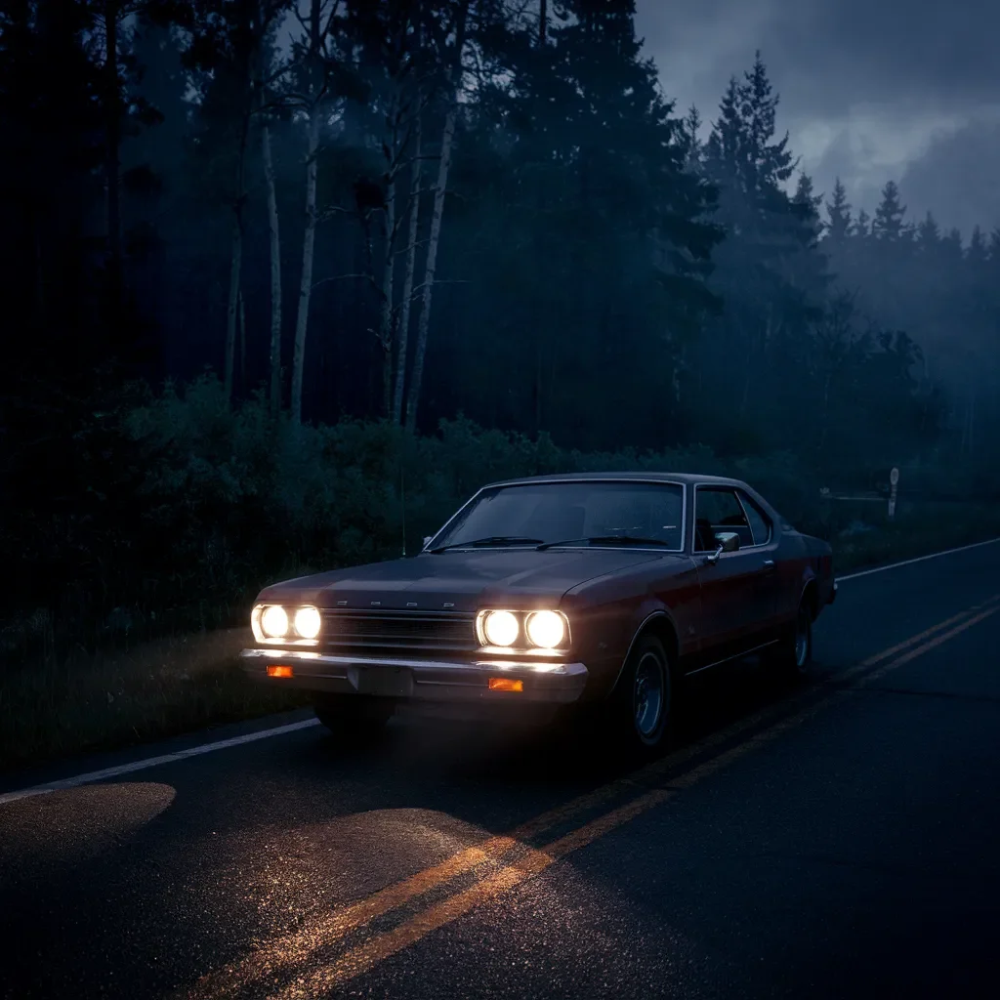

잭 서먼의 낡은 포드의 헤드라이트가 16번 국도의 칠흑 같은 어둠을 가르고 있었다. 엘리 코스그로브는 그의 옆자리에 앉아 대시보드 위에서 불안한 리듬을 손가락으로 두드리고 있었다. 그들은 몇 마일 동안 다른 차를 보지 못했다.
“잭, 정말 이 길이 맞는 거 맞아?” 엘리의 목소리는 차의 덜컹거리는 엔진 소리에 거의 묻혀 떨리고 있었다.
잭은 핸들을 움켜쥐며 손마디가 하얗게 질렸다. “내비게이션이 그렇다는데,” 그는 앞에 펼쳐진 끝없는 아스팔트 길을 응시하며 중얼거렸다.
그때 그들은 그것을 보았다 - 차선 한가운데 꼼짝 않고 서 있는 인영, 상향등에 비춰진 그 형체는. 키가 크고, 믿을 수 없을 정도로 컸으며, 팔다리는 사람의 것이라고 보기에는 너무 길고 가늘었다.
[The headlights of Jack Thurman’s beat-up Ford cut through the inky darkness of Highway 16. Ellie Cosgrove sat beside him, her fingers drumming an anxious rhythm on the dashboard. They hadn’t seen another car for miles.
“Jack, are you sure this is the right way?” Ellie’s voice quivered, barely audible above the car’s rattling engine.
Jack’s knuckles whitened on the steering wheel. “GPS says so,” he muttered, eyes fixed on the endless stretch of asphalt ahead.
That’s when they saw it – a figure standing motionless in the middle of their lane, its form illuminated by the high beams. It was tall, impossibly tall, its limbs too long and thin to be human]
“세상에!” 잭은 브레이크를 밟았다. 타이어가 항의하듯 끽끽거리며 차는 옆으로 쏠렸다.
엘리는 비명을 지르며, 두 손을 들어 얼굴을 가렸다. 그 인영은 움직이지 않았다. 그저 거기 서서, 특징 없는 머리를 차가 다가오는 쪽으로 돌리고 있을 뿐이었다.
잭은 핸들을 세게 오른쪽으로 꺾었다. 세상이 빙글빙글 돌았다. 그 혼란의 순간, 엘리는 그것의 팔이 뻗어, 믿을 수 없을 만큼 긴 손가락이 그들의 차를 향해 뻗는 것을 보았다고 맹세할 수 있었다.
그리고 모든 것이 캄캄해졌다.
엘리가 정신을 차렸을 때, 차는 멈춰 있었다. 구겨진 보닛에서 김이 새어 나오고 있었다. 잭은 핸들에 쓰러져 있었고, 가느다란 핏줄기가 관자놀이를 타고 흘러내리고 있었다.
“잭?” 엘리가 쉰 목소리로 속삭였다. 그녀는 부드럽게 그의 어깨를 흔들었다. “잭, 일어나.”
밖에서, 무언가가 운전석 문에 긁히는 소리가 났다. 느리고. 의도적으로. 금속에 손톱을 긁는 것처럼.
엘리는 그 소리가 나는 쪽으로 고개를 돌리며 숨이 멎었다. 잭의 창문에 난 거미줄 같은 금 사이로, 그녀는 그것을 보았다 - 한 손. 창백하고. 길쭉하고. 비인간적인.
그 손가락이 문 손잡이를 감싸 쥐었다.
[“Jesus Christ!” Jack stomped on the brakes. The tires screeched in protest as the car fishtailed.
Ellie screamed, her hands flying up to cover her face. The figure didn’t move. It just stood there, its featureless head turned towards them as the car hurtled closer.
Jack cranked the wheel hard to the right. The world spun. In that moment of chaos, Ellie swore she saw the thing’s arm stretch out, impossibly long fingers reaching for their car.
Then everything went black.
When Ellie came to, the car had stopped. Steam hissed from the crumpled hood. Jack was slumped over the wheel, a thin trickle of blood running down his temple.
“Jack?” Ellie whispered, her voice hoarse. She shook his shoulder gently. “Jack, wake up.”
Outside, something scraped against the driver’s side door. Slow. Deliberate. Like fingernails on metal.
Ellie’s breath caught in her throat as she turned towards the sound. Through the spider-webbed glass of Jack’s window, she saw it – a hand. Pale. Elongated. Inhuman.
Its fingers curled around the door handle]
Subscribed
엘리의 심장은 문 손잡이가 돌아가기 시작하자 갈비뼈에 쿵쾅거렸다. 떨리는 손으로, 그녀는 안전벨트를 더듬었다. 그들이 갇힌 이 금속 관에서 필사적으로 빠져나가려 했다.
“제발, 잭.” 그녀는 훌쩍이며, 그를 더 세게 흔들었다. 그의 머리가 생기 없이 옆으로 떨어졌다.
문이 삐걱 열렸다.
아드레날린이 폭발하며, 엘리는 잭의 몸 위로 몸을 던져 손바닥으로 잠금장치를 쾅 내리쳤다. 그 생물의 손가락은, 달빛처럼 창백하고 있어야 할 길이의 두 배나 되어, 이미 틈새로 기어들어오고 있었다.
엘리는 비명을 질렀다. 그녀의 목에서 터져 나오는 원초적인 소리였다. 그녀는 온몸의 무게를 실어 문에 던졌고, 그것의 손을 으스러뜨렸다. 고통의 울부짖음도, 반응도 없었다. 그저 천천히, 막을 수 없이 문이 더 크게 열릴 뿐이었다.
[Ellie’s heart hammered against her ribs as the door handle began to turn. With trembling hands, she fumbled for her seatbelt, desperate to free herself from the metal coffin they’d become.
“Jack, please,” she whimpered, shaking him harder. His head lolled lifelessly to the side.
The door creaked open.
In a burst of adrenaline, Ellie lunged across Jack’s body, slamming her palm against the lock. The creature’s fingers, pale as moonlight and twice as long as they should be, were already snaking through the gap.
Ellie screamed, a primal sound that tore from her throat. She threw her entire weight against the door, crushing the thing’s hand. There was no howl of pain, no reaction at all. Just the slow, inexorable push of the door opening wider]
먼저 그 악취가 그녀를 강타했다 - 오존과 썩은 고기 냄새 같은. 그리고 그녀는 그것의 얼굴을, 아니 오히려 얼굴의 부재를 보았다. 이목구비가 있어야 할 곳에는, 매끄럽고 회색빛의 피부가 길쭉한 두개골에 팽팽하게 당겨져 있을 뿐이었다.
그것의 머리가 기울어지더니, 눈 없는 호기심으로 그녀를 살폈다. 엘리는 제정신이 가장자리에서 닳아 없어지는 것을 느꼈다.
갑자기, 잭이 그녀 옆에서 숨을 헐떡이며, 화들짝 깨어났다. “엘리? 무슨 일이-”
그의 말은 그들의 차로 억지로 들어오는 그 괴물을 돌아보며 보자 끊겼다. 그 공포를 함께한 순간, 엘리의 손은 여전히 시동에 꽂힌 키를 찾았다.
그녀는 키를 돌렸다.
엔진이 요란하게 살아났고, 심지어 그 생물조차 놀라게 했다. 잭은 순수한 본능으로, 액셀러레이터를 세게 밟았다. 차는 앞으로 급발진했고, 타이어가 흩어진 자갈 위에서 헛돌았다.
[The stench hit her first – like ozone and rotting meat. Then she saw its face, or rather, the absence of one. Where features should have been, there was only smooth, grayish skin stretched taut over an elongated skull.
Its head tilted, regarding her with eyeless curiosity. Ellie felt her sanity fraying at the edges.
Suddenly, Jack gasped beside her, jolting awake. “Ellie? What’s ha—”
His words cut off as he turned and saw the monstrosity forcing its way into their car. In that moment of shared terror, Ellie’s hand found the keys still in the ignition.
She turned them.
The engine roared to life, startling even the creature. Jack, operating on pure instinct, slammed his foot on the gas. The car lurched forward, tires spinning in the loose gravel]
그 것의 팔은 그들이 떨어져 나가는데도 여전히 그들에게 손을 뻗으며 믿을 수 없을 만큼 늘어났다. 백미러로, 엘리는 그것의 형체가 도로 한가운데 꼼짝 않고 서서 점점 작아지는 것을 지켜보았다.
그들은 충격에 휩싸인 채 침묵 속에 차를 몰았고, 고속도로는 끝없이 펼쳐져 있었다. 두 사람 모두 감히 자신들이 본 것에 대해 말하지도 못했고, 왜 GPS가 알려진 도로에서 몇 마일이나 떨어진 외딴 곳을 가리키는지 궁금해하지도 않았다.
새벽이 밝아오고, 하늘이 분홍색과 금색으로 물들자, 엘리가 마침내 입을 열었다. “잭,” 그녀가 쉰 목소리로 속삭였다. “저것 보여?”
앞쪽, 이른 아침 햇살에 잠긴 채, 또 다른 인영이 도로에 서 있었다. 크고. 움직임 없이. 기다리고 있었다.
[The thing’s arm stretched impossibly, still reaching for them as they peeled away. In the rearview mirror, Ellie watched its form grow smaller, standing motionless in the middle of the road.
They drove in shocked silence, the highway stretching endlessly before them. Neither dared to speak of what they’d seen, or wonder aloud why the GPS was now showing them in the middle of nowhere, miles from any known road.
As dawn broke, painting the sky in hues of pink and gold, Ellie finally spoke. “Jack,” she whispered, her voice raw, “do you see that?”
Ahead, bathed in the early morning light, stood another figure in the road. Tall. Motionless. Waiting.]